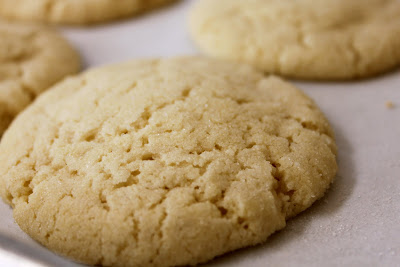

Sugar Cookies

Ingredients
Makes 10 dozen
- 1 1/2 cups butter
- 1 1/2 cups shortening
- 1 1/2 cups white sugar
- 1 1/2 cups confectioners' sugar
- 4 1/2 teaspoons vanilla extract
- 3 eggs
- 6 3/4 cups all-purpose flour
- 1 1/2 teaspoons baking soda
- 1 1/2 teaspoons cream of tartar
- 1/2 teaspoon salt
Instructions
- Cream butter, shortening and sugars until light and fluffy.
- Beat in eggs and vanilla.
- Sift dry ingredients, add to creamed mixture; mix to blend.
- Shape dough into 1 inch balls.
- Dip in regular or colored sugar or decorator sprinkles.
- Place on lightly greased cookie sheet. Flatten slightly with the bottom of a water glass.
- Bake at 375 degrees F (190 degrees C) for 10-12 minutes. *Larger cookies bake at 350 degrees F (175 degrees C) for 15 minutes.
Find more at AllRecipes.com